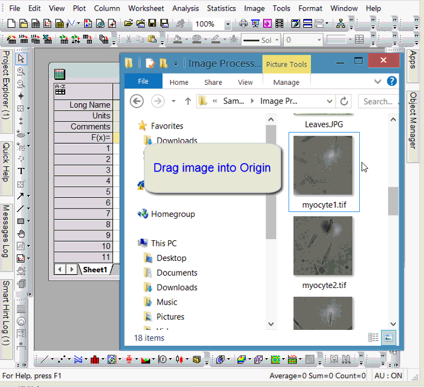

FAQ-681 Wie importiere ich ein Bild in Origin?
Letztes Update: 11.01.2022
Image-Graph-Origin
Bilddateien können in Origin-Diagramme, -Matrizen und -- seit Origin 2022 -- in das Origin-Bildfenster importiert werden. Außerdem können sie in Arbeitsblattzellen eingefügt werden.
Bilder in das Bildfenster importieren
Seit seiner Einführung in Origin 2022 ist das Bildfenster ein einzelseitiges Fenster zur Bild- und Videobearbeitung.
- Wählen Sie Datei: Neues Bild und dann Bild/Video oder Mehrere Bilddateien (zum Importieren von Bildstapeln).
- Um ein Bild oder Video in ein leeres Bildfenster zu importieren, klicken Sie mit der rechten Maustaste auf das Bildfenster und wählen Sie Importieren.
- Um ein Bild oder Video per Drag&Drop zu importieren, ziehen Sie eine Datei in den Origin-Arbeitsbereich.
Weitere Informationen finden Sie unter:
Bilder in Matrizen importieren
Vor Origin 2022 wurden Bildbearbeitungs- und -analyseoperationen auf Matrixdaten durchgeführt. Das Matrixfenster bleibt das Fenster für die Bildanalyse. Jede Matrixmappe kann bis zu 1.024 Blätter enthalten und jedes Blatt kann mehr als 65.000 sich überlagernde Matrixobjekte enthalten.
- Öffnen Sie ein neues Matrixfenster und wählen Sie Daten: Aus Datei importieren: Bild in Matrix.
- Benutzer von älteren Versionen sollten Datei: Import: Bild aus Datei einfügen wählen.
- Das Matrixfenster unterstützt sowohl Bild- als auch Datenmodus. Wählen Sie Ansicht: Datenmodus (Strg+Shift+D) oder Ansicht: Bildmodus (Strg+Shift+I).
- Um ein Bild per Drag&Drop in die Matrix zu importieren, ziehen Sie die Bilddatei auf ein Matrixfenster. Beachten Sie, dass seit Origin 2022 das Ziehen einer Bilddatei in einen leeren Bereich des Arbeitsbereiches dieses Bild in ein Bildfenster importiert. Um eine Bilddatei in einen leeren Bereich des Arbeitsbereichs zu ziehen und sie in einer Matrix zu öffnen, setzen Sie die Systemvariable @IMGD=0.
- Sie können Matrixobjekte als Miniaturbilder oder -- mit einem Schieber -- als eine Reihe von Bildern direkt in der Matrix anzeigen. Weitere Informationen finden Sie unter Miniaturbilder und Schieber.
- 
Weitere Informationen finden Sie unter:
Bilder in Diagramme importieren
- Wählen Sie bei aktivem Diagrammfenster Einfügen: Bilder aus Dateien.
- Benutzer von älteren Versionen sollten Datei: Import: Bild aus Datei einfügen wählen.
- Wenn Sie Version 2021b verwenden, fragt Origin Sie, ob Sie das Bild als Hintergrund des Diagrammlayers einfügen möchten.
Weitere Informationen finden Sie unter:
Bilder in Arbeitsblattzellen einfügen
Klicken Sie mit der rechten Maustaste auf eine Arbeitsblattzelle und wählen Sie Bilder aus Dateien einfügen.
Weitere Informationen finden Sie unter Diagramme, Bilder und andere Objekte in Arbeitsblattzellen einfügen.
Schlüsselwörter:Bildanalyse, Bild importieren